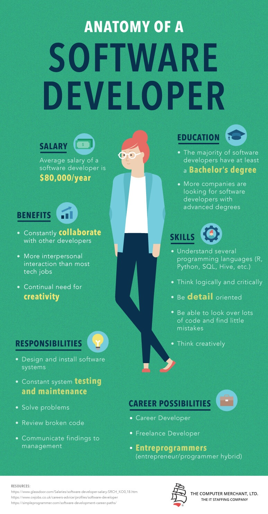

Audio Intro
Software Engineering
My name is Cody Jennings and my desired occupation is a Software Engineer.
Software Engineer job description
Software Engineering is one of many pathways in the Computer Science field. Software Engineers deal with the intricacies behind our favorite software applications. Software Engineers or (SWEs) complete all aspects of an application including design, development, testing, and maintenance. SWEs use many concepts, engineering principals, languages, and technologies to complete software solutions for the end users (me and you).
Frontend developers deal with the aesthetic look of an application. This includes: color scheme, animations, multi-media, text and container placement throughout the application. Frontend developers make an application desirable to look at with easy-to-read information. Backend developers work on the functionality of an application behind the scenes. They maintain server-side logic and infrastructure that ultimately powers the application and software systems. They handle requests from the frontend and process data, perform calculations, and interact with databases and external services. This includes designing and implementing database structures, ensuring efficient data storage and retrieval. They write queries, optimize database performance, and handle data migrations and backups. Fullstack developers maintain code on both ends.

Rehan, R. N. Code background
Knowledge-Skills/Training-Education
Education: Most software engineers have a bachelor's degree in Computer Science, Software Engineering, or a
related field. However, it's worth noting that formal education is not always a strict requirement, and some
professionals enter the field through alternative paths or self-study. Programming Languages: Proficiency in
one
or more programming languages is essential for software engineers.
Common languages include Java, Python, C++, JavaScript, Ruby, and many others. Understanding the syntax,
data
structures, algorithms, and best practices associated with these languages is crucial. Software Development
Principles: Software engineers should have a solid understanding of software
development principles, including object-oriented programming (OOP), modular design, version control, and
software development life cycle methodologies (such as Agile or Scrum).
Data Structures and Algorithms: Knowledge of fundamental data structures (arrays, linked lists, trees,
graphs, etc.) and algorithms (sorting, searching, traversal, etc.) is important for designing efficient and
optimized
software solutions. Problem-Solving and Analytical Skills: Software engineers should possess strong
problem-solving and
analytical abilities to tackle complex coding challenges, debug issues, and optimize performance. They need
to
break down
problems, identify patterns, and devise effective solutions. Software Testing and Debugging: Understanding
various testing methodologies (unit testing, integration
testing, etc.) and possessing the ability to debug and fix issues in software code is essential. Knowledge
of
testing
frameworks and tools is beneficial. Databases and SQL: Familiarity with database concepts, relational
database
management systems (such as MySQL, PostgreSQL), and Structured Query Language (SQL) is important for
storing,
retrieving, and manipulating data
effectively.
Web Development: Understanding web development concepts, including HTML, CSS, and JavaScript, is
valuable
for building web applications. Familiarity with web frameworks and libraries (e.g., React, Angular, Django)
is
also
beneficial. Software Engineering Tools: Proficiency in using development tools and frameworks like
Integrated
Development Environments (IDEs), version control systems (e.g., Git), project management tools (e.g., JIRA),
and
collaboration platforms is important for efficient software development. Continuous Learning: The field of
software engineering is constantly evolving, so a commitment to continuous
learning is crucial. Keeping up with the latest technologies, frameworks, and industry trends is essential
for
staying relevant and advancing in the field.

Anatomy Of A Software Developer Infographic
Salary/Benefits
The salary and benefits of a Software Engineer can vary depending on factors such as location, years of
experience, company size, industry, and skill set. Generally, software engineering is known to offer
competitive compensation packages. Here are some typical components of a software engineer's salary and
benefits:
Salary Range: The salary range for software engineers can vary significantly based on factors mentioned
earlier. Entry-level positions may start around $60,000 to $80,000 per year, while more experienced
engineers,
particularly in tech hubs or senior roles, can earn well into six figures or more annually. Bonuses: Many
companies offer performance-based bonuses or profit-sharing programs to reward software
engineers for exceptional contributions or meeting specific targets. Stock Options or Equity: In technology
companies, stock options or equity grants may be offered to software engineers, providing an opportunity to
benefit from the company's growth and financial success.
Health and Retirement Benefits: Software engineers often receive health insurance packages that cover
medical, dental, and vision expenses. Retirement benefits such as 401(k) plans or employer matching
contributions may also be provided. Paid Time Off: Software engineers typically receive paid vacation days,
holidays, and sick leave. The specific number of days can vary depending on the company and employment
contract. Flexible Work Arrangements: Many software engineering roles offer flexibility in terms of remote
work options, flexible hours, or the ability to work from home. This flexibility can vary based on company
policies.
Professional Development: Companies may allocate budgets for software engineers to attend conferences,
training programs, or workshops to enhance their skills and stay up to date with industry advancements.
Relocation Assistance: If a software engineer needs to relocate for a job, companies may provide relocation
assistance to cover moving expenses, temporary housing, or transportation costs. Employee Perks: Some
companies offer additional perks such as free meals, on-site fitness facilities, commuter benefits,
childcare assistance, or company-sponsored social events.
Doyle, A. What Does a Software Developer Do?
Disclamer:
I am not affiliated with nor own any rights regarding this page's images/url source or statistics. No profits were generated from this project. All materials utilized were for educational and demonstration purposes only.